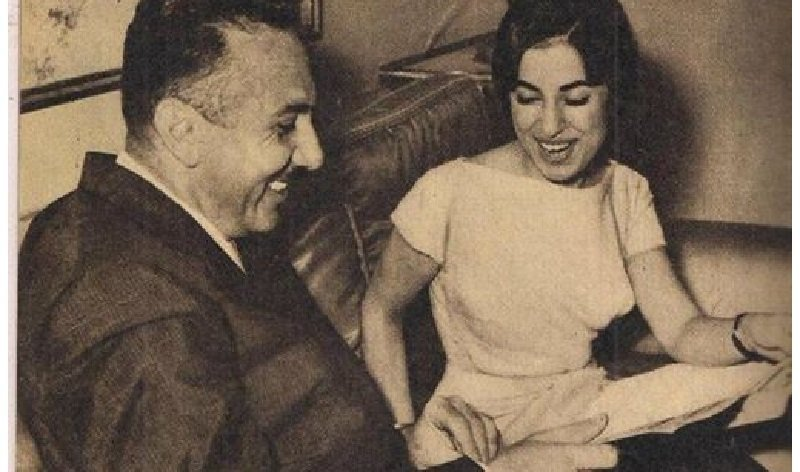

نجاة الصغيرة
"بالنسبة لي، يعبّر صوت نجاة عن أعماق الأنثى الضعيفة الخجولة التي تخاف من البوح عمّا في عالمها الذاتي من أحاسيس. واعتقد أنها أفضل من غنى قصائدي وعبّر عنها."
نزار قباني متحدّثًا عن نجاة الصغيرة
لا يخفى على الجميع مكانة نجاة الصغيرة بين جميع المطربين والمطربات الذين غنوا قصائد نزار قباني. إذ تفرّدت نجاة في غناء مجموعة من أعمال نزار يغلب عليها صفة وشكل ملتصقان بشخصيّة نجاة كفنانة وكمؤدية، واختياراتها لإسقاط ذلك التصور على موسيقى محمد عبد الوهاب وكلمات قبّاني.
أنتج هذا الثالوث (نجاة، عبد الوهاب وقبّاني) شكلًا مميّزًا من الأداء والموسيقى كرّس لجماليّات واختيارات فنيّة عكست توافق رؤى وأفكار الفنانين الثلاثة حول قضايا مثل: مقدرة المرأة العاطفيّة، علاقة المرأة بالرجل، تحديد ذلك الدور وتلك العلاقة في سياق حداثي في صراع مع قيم وموروثات الثقافة العربية وتاريخها، و كيف يعيد ذلك الصراع إنتاج جماليّات وأنماط تعلي من القيم المحافظة شديدة العداء للنسويّة أو لأي آفاق تقدميّة من الممكن أن تحتويها "دولة ما بعد الاستقلال".
يحاول المقال رسم الخطوط العريضة لأمثلة من بعض تلك الأعمال باستعمال التحليل النقدي، الذي يهدف إلى مساءلة واحدة من أهم المراجع الرومانسيّة بمعناها الحديث لمتحدثي اللغة العربيّة؛ وكيف، في ظل حراك سياسي واجتماعي شديد السيولة والتقدميّة، نجح الثالوث في إنتاج صورة، أو تصوّر، تكرّس قيم الخضوع، الضعف الأنثوي، هيمنة الرجل، التكوين العاطفي للمرأة الذي يقصي العقل؛ وكيف استُقبل هذه الصورة واعتُبر معلمًا من معالم الرومانسيّة لكثيرين. في النهاية، يسعى المقال لفتح النقاش عن إذا ما كانت تلك الرؤية المثاليّة لـ الرومانسيّة العربية تخلو من المآخذ، وماذا يمكن أن تعنيه لجمهور معاصر ما زال يؤمن بنفس القيم والتصوّرات، حتى لو اختلفت أشكالها وتجليّاتها.
ما هي جماليّات الخضوع؟
يُقصد بالجماليّات الأفكار والقيم الحاكمة التي تحدّد معنى وحدود الجمال لعمل ما. فعلى سبيل المثال، أي عمل يُعلي من قيمة التناسق والتوازن بين عناصره فهو عمل يعلي من الجماليّات الشكليّة أو الأساليبية، إذ تكون قيمة العمل بالنسبة لصانعيه منصبة على تلك المبادئ المتعلقة بالأسلوب، التركيب، التكوين وغيرها دون مراعاة لموضوع العمل، كيفيّة استقباله، تأويله عن طريق جمهور معين وما إلى ذلك. بقدر التزام القائمين بالعمل بمجموعة معينة بتلك القيم والأفكار الحاكمة، بقدر ما يمكن تحديد تلك الجماليات وتحليلها في محتوى العمل.
لعل أهم ما تطرحه روبن هو نقد فرويد وليفي شتراوس لمفهومهما عن علاقات القرابة وتحديد دور النساء كأشياء يتم تهاديها وتبادلها، وطبيعة التكوين النفسي للمرأة المستندة على التعريف بالنقص وقبول الألم كجزء لا يتجزّأ من حياتها.
أهم ما يمكن أن نستقيه من مقالة روبن بالتحديد أمران: الأول هو نقدها لفكرة قصور المرأة كعلامة أو مستودع لرمز لا يخرج للوجود إلا حينما يقع في علاقة تبادليّة مع الرجل. توجّه روبن نقدها لهذه الفكرة خاصة في نصوص ليفي شتراوس، والتي تربط علّة وجود المرأة كـ كلمة في حاجة دائمة لأن يتم استنطاقها من قبل الرجل، وإلا تبقى خارج النّسق المعرفي. يعترف شتراوس أن هذا يضع المرأة في حالة تناقض كفرد له قيمة وكفكرة مجرّدة تقع في حالة دائمة لذلك الحوار الذي يتخلل كل جوانب الاتصال والتواصل الإنساني. الأمر الثاني هو ربط تطور جنسانيّة المرأة بفكرة النقص أو الألم، ما يضع المرأة في وضع غير طبيعيّ في علاقتها بذاتها والآخر، لتصبح المازوخيّة والسلبيّة في قبول الخضوع أفكار مركزيّة لفهم ما خلقه نزار عن تصورات علاقة الرجل بالمرأة، وما هي الفكرة المثالية للأنثى.
السياق التاريخي
بدأ تعاون نجاة الصغيرة ونزار قبّاني في العام ١٩٦٠ لدى إصدار أغنية أيظن كنموذج لجماليّات ومحتوى وأسلوب إنتاج عقد الستينيّات الفنّي. إذ تبيّن نظرة سريعة على تلك الحقبة أن معدل الأميّة في مصر قبل انقلاب العام ١٩٥٢ حوالي ٧٠٪ بين جميع السكان فوق عشرة أعوام – ٩٠٪ من النساء كانوا أميّات. بحلول عقد الستينيّات، زاد معدل الالتحاق بالمدرسة أو التعليم إلى ما يقرب من ٢٠٠٪، وخلال عقد الخمسينيّات إلى منتصف الستينيّات، تطوّر ما يعرف بـ نسويّة الدولة، حيث تم تصفية الحراك النسوي بمقابل إعطاء المرأة حق التصويت وتقلّدها المناصب الإداريّة العليا (فعينت حكمت أبو زيد كأول وزيرة سيدة في مصر عام ١٩٦٢ على سبيل المثال) وبعض الحقوق المدنيّة والسياسيّة.
في ظل تلك التطورات الملحوظة في وضع المرأة، والتي حتى لو كانت سطحية في أبعادها ولكنها حملت بعضًا من التأثير التقدّمي (على الأقل على مستوى الخطاب)، زاد عدد السيدات المتعلمات، وعدد السيدات العاملات داخل الجهاز البيروقراطي للدولة وعلى مستوى مهن كانت حكرًا على الرجال مثل الصحافة والإعلام، وذلك رغم غياب الحراك النسوي بأشكاله الراديكاليّة السابقة للثورة (نضال درية شفيق على سبيل المثال). لكن أنماط تمثيل المرأة اختلفت بشكل كبير في عقد الخمسينيّات والستينيّات حتى ولو تم ذلك تحت منظومة استغلال الدولة لشكل المساواة بين الجنسين مع تفريغه من أي محتوى ينذر بتحول حقيقي في وعي المجتمع.
في ظل ذلك السياق الذي كان يقوم بإعادة تعريف العلاقات الاجتماعيّة ويعيد صياغة تصورات الدولة عن المرأة ودورها (نظرة سريعة على أي ملحق صحافي في مجال التعليم أو الصناعة أو الطب في تلك الفترة نجد تصورات مثالية عن مشاركة المرأة وعن تحديث فكرة الأسرة والأسرة المصرية ودورها في "دولة ما بعد الاستقلال")، ظهرت الشراكة الفنية لنجاة وعبد الوهاب وقبّاني، وجاء كل منهم ليمثّل موقفًا شديد الارتباك ومليء بالتناقضات حول معنى وأثر الحداثة على علاقة المرأة بالرجل، ومعنى تلك العلاقة وآفاقها في ظل العهد الجديد.
الثالوث
نجاة الصغيرة
بدأت نجاة حياتها الفنيّة بتقليد أم كلثوم وغناء أغانيها في الحفلات والجلسات الخاصة، وذلك على يد شقيقها الموسيقي عز الدين حسني الذي درّبها وعلّمها الغناء. تقول الأسطورة أن عبد الوهاب استمع إليها وأوعز لأبيها الحفاظ على تلك الموهبة (حتى أنه حرّر محضرًا لوالد نجاة حتى لا يستغلها في الغناء وهي ما زالت صغيرة). كان من أسماها بـ الصغيرة فكري أباظة "لأنها صغيرة وبحاجة لرعاية" كما تقول الأسطورة أيضًا.
أتقنت نجاة تقليد أم كلثوم إلى درجة كبيرة، وتشرّبت تمامًا منهجها في الغناء، فبينما تفرّدت أم كلثوم بتمكّنها الأسطوري من مفاصل وخبايا اللغة العربيّة من جهة، وأهواء مستمعيها (على اختلافهم) من جهة أخرى، تميّزت نجاة باستعياب منطق الأداء في عدة أوجه، لعل أهمها التماهي تمامًا مع محتوى ما تغنيه من حيث تلوين الصوت والأداء. لعل أفضل مثال على ذلك هو غنائها لأغنية هجرتك في تسجيل جلسة خاصة مع فريد الأطرش.
لكن في حين أن أم كلثوم جرّدت شخصيتها تمامًا من أي حضور، وجعلت أدائها وصوتها ساحةً لتمثيل ما تغنيه (فكانت هي التجسيد المجرد لأفكار أو حالات إنسانية، فلا نرى أم كلثوم نفسها ولكن نرى تجلي أدائي وصوتي لحالة أو فكرة)، فنجاة لم تستلهم ذلك النموذج، ولكن ارتبط ما تغنيه بحضور نجاة كـ أنثى على سبيل المثال، كما يقول نزار. لسبب ما، رفضت نجاة البعد الملحمي لأداء أم كلثوم، وعلى الرغم من استعارتها لكثير من عناصر أداء أم كلثوم، خاصة فيما يخص القصائد المغنّاة، ألا أنّها ربطت أسلوب أدائها بحضور واختيارات فنيّة شديدة الصلة بشخصية أدائيّة معينة: الأنثى الضعيفة، المهزومة، الوفية، التي تستسلم لجبروت الحب، وللرجل الذي غالبًا ما يظهر بشخصيّة المتجنّي على محبوبته التي، في النهاية، تستسلم له لأن ذلك هو "طابع الأنثى".
نزار قباني
استهلّ قبّاني مسيرته الشعريّة بدواوين أراد أن يكسر بها قالب التعبير عن الحب وعلاقة الرجل بالمرأة بدأها عام ١٩٤٤ بنشر ديوان قالت لي السمراء. اتسم أسلوبه بالرطانة والمعاصرة في التعبيرات وفي اللغة المستخدمة، إلا أن البعد الثوري الذي كان يبتغيه نزار كان أبعد ما يكون عن ما كتبه فعليًّا. فكل ما كتبه حتى العام ١٩٦٧ (عام النكسة والذي يعتبره كثير من النقاد علامة فارقة في تاريخ نزار كشاعر) لم يخرج عن تنميط علاقة المرأة بالرجل في ظل ثنائية السيطرة والخضوع، حنان ودفء المرأة التي يتمحور وجودها حول إنقاذ الرجل من تسلطته وهوسه، وفي بعض الأحيان نزعاته الانتحاريّة (أو التعبير الفرويدي: دافع الموت).
لم تخرج موضوعات نزار أو تصوراته عن المرأة أو حتى نماذج النساء التي خلقها شعره عن المرأة كـ أنثى ضعيفة، تلك التي كل ما تحتويه من مشاعر عرضة لتسلّط المجتمع المحافظ الذي يجعلها في حالة دائمة لحماية الرجل الذي يضيق ذرعًا من ذلك المجتمع نفسه و لكن لسبب مجهول، لا يريد تغييره (ولعل السبب المجهول هو أن تغييره يفقد الرجل موقف المسيطر ببساطة).
بعيدًا عن الجانب الحسي أو حتى الجنسي في قصائد نزار ومعناه، فذلك الجانب أيضًا لم يمس المرأة ووضعها في المجتمع من قريب أو من بعيد. إذ بدا أن كل ما أنتجه ذلك الجانب أو تلك النصوص مقتصرًا على تقديم شكل ولغة معاصرة لـ "الغزل الصريح"، ليس إلا. ظلت المرأة مستودع هوى الرجل ومتعته دون تغيير أو تبديل، إلا في النواحي الشكلية لذلك التناول.
محمّد عبد الوهاب
لا يسع المقام هنا للحديث عن تاريخ عبد الوهاب الفني بشكل شامل، والذي يقع خارج سياق المقال. فما يعنينا هنا علاقته بنجاة، وخاصة فيما يخص تلحين قصائد قبّاني. كما أوضحنا سابقًا، استمع عبد الوهاب إلى نجاة وهي لا تزال صغيرة، وحرص على إسداء النصحية لأبيها بأبعادها عن الشهرة حتى تنضج موهبتها. لاحقًا، لحّن عبد الوهاب لنجاة حوالي ٢٣ أغنية تنوّعت ما بين القصيدة والأغاني الرومانسيّة، كما شاركت في أهم أعماله الوطنيّة (وطني الأكبر، الجيل الصاعد).
وخصّها عبد الوهاب بكثير من المديح، حتى قيل أنه قبل وفاته عندما سئل "من هو أجمل صوت بعد وفاة أم كلثوم"، قال: "نجاة". في توصيفها قال عنها أنّها "صاحبة السكون الصاخب". أشاد عبد الوهاب بذكاء نجاة في التعامل مع صوتها ومع الموسيقى التي تغنيها، ويعتقد بعض النقاد أن لنجاة دور كبير في تطور تلحين عبد الوهاب للقصائد، فكانت كل ألحانه لقصائد نزار التي غنتها نجاة، وإن لم تكن تتسم بالإبداع الموسيقي والعبقريّة التي ميزت ألحان السنباطي على سبيل المثال، لكنها تماشت تمامًا مع صوت نجاة ونصوص نزار فيما يبدو كتوافق في نوع وقالب ومحتوى العمل الفني.
فلو قارنا بين ما لحنه عبد الوهاب لأم كلثوم من القصائد وبين تلحينه لنجاة، سندرك حتمًا مواطن الضعف الكثيرة في موسيقاه الكلثومية (هذه ليلتي، أغدًا ألقاك). في المقابل، تبدو أغاني نجاة ونزار في حالة تناسب مع صوت نجاة وشخصيتها الأدائية.
كانت باكورة تعاون نزار ونجاة وعبد الوهاب أغنية أيظن. تقول نجاة أن نزار أهداها القصيدة وكتبها لها خصيصًا، وكانت في حيرة حول اختيار من سيقوم بتلحينها. تقول الأسطورة أن عبد الوهاب لحنها في بضع ساعات، واستدعى نجاة لسماع اللحن ولبداية البروفات. صدرت الأغنية العام ١٩٦٠ لتحقق نجاحًا كبيرًا، وكان نزار في ذلك الوقت منتدبًا في السفارة السوريّة في الصين ولم يستطع سماع الأغنية، فكتب لنجاة يطالبها بإرسال تسجيل له وإلا طلبها في "بيت الطاعة" (لا يمكن أن نفوّت مثل ذلك التعبير الذي ينم عن ذكوريّة فجة في شكلها ومحتواها).
ماذا أقول له، ١٩٦٥
ينتصف عقد الستينيّات وتغني نجاة ثاني أشهر أغانيها لنزار: ماذا أقول له؟، من ديوان الرسم بالكلمات. يبدو لنا أن القصيدة أعقد لغويًّا من سابقتها، وكذلك موسيقى عبد الوهاب على بساطتها وكذلك أداء نجاة الذي يظهر جليًّا فيه أصداء كلثوميّة في الأداء، لكن يظل النموذج الذي ابتدعه نزار في أيظن كما هو. فتبدأ القصيدة أيضًا بتساؤل واستنكار لامرأة تواجه رجوع حبيبها وتؤكد على انتهاء تلك العلاقة واستبعادها لأي فرصة لرجوعها إلى ذلك الحبيب. بنفس المنطق السابق، يبدأ الشك في التسلل إلى عقلها وتتساءل هل من الممكن حقًا كراهيته أم لا، ومثل أيظن، تلعب الفساتين دورها مرة أخرى، فتتساءل "بأي ثوب من الأثواب ألقاه" وتتراجع شيئًا فشيئًا حتى يتأكد لها أن هي كانت مخطئة بشأنه وأن "حتى خطاياه ما عادت خطاياه" وأنها تريد رجوعه مرة أخرى وأنه أن جاء يسألها أن كانت تحبه أم لا فإنها "ألف أهواه".
إلى رجل، ١٩٧٠
ينتهي هذا العقد بغناء نجاة: إلى رجل، من ديوان قصائد متوحشة، من تلحين عبد الوهاب، وتُدرج الأغنية ضمن أغاني فيلم جفّت الدموع (١٩٧٥) من إخراج حلمي رفلة. نرى في أداء نجاة درجة معينة من الاستقرار، فلن تغير نجاة من طريقتها حتى الوقت الراهن. فلقد ركنت لأسلوب أداء معين، مجمل اختياراته الفنيّة آمنة وغير مثيرة للجدل وتتسم فيها بقدر كبير من الثقة في إمكانياتها، مبتعدةً عن الحالة الانفعالية التي شاهدناها في أيظن. كذلك الحال بموسيقى عبد الوهاب التي تبدو أنها تجميع لمجموعة الألحان التي لحنها لأم كلثوم في نفس الفترة.
تأتي القصيدة لتخرج عن إطار سابقتيها في اعتراف بطلتها صراحة أنها "يا رجلًا أبيع من أجله الدنيا وما فيها"، فلا مواربة ولا استنكار ولا تساؤل، ولعل تلك القصيدة من "أعنف" ما غنت نجاة لنزار. فنرى تصورات "متوحشة" بالفعل: "أنـا أحبك يا سيفًا أسال دمي"، "وإن من أشعل النيـران يطفيها"، "مـا زال يقتل أحلامي ويحييها"، "فما حياتي أنا إن لم تكن فيها".
لاندري لماذا يحب أي شخص رجل يسيل الدماء ويقتل الأحلام ويشعل النيران، ويبدو أن نزار أيضًا لايدري، فهو لا يعطي لنا سببًا لذلك الاستسلام العجيب لمثل ذلك القدر من العنف والقسوة، ولماذا يستحق ذلك الرجل كل هذا الخضوع والاستسلام.
ماذا يعني كل هذا؟
ينسب إلى عبد الوهاب ونزار قباني الفضل في تحديث الموسيقى والشعر على مستوى الشكل والأسلوب. فعلى مستوى الأسلوب والشكل فالقوالب المستخدمة، الإيقاعات، التوزيع في حالة عبد الوهاب، التعبيرات المعاصرة، أو لغة الصحافة في حالة نزار. أو على أساس المحتوى: علاقة الرجل بالمرأة، الوصف الحسي أو الجنسي بشكل معاصر بالنسبة لنزار. جاءت نجاة لتجسّد ذلك "التحديث" أو "التجديد" بصوتها وشخصيتها الأدائيّة.
لكن بعد عرضنا لثلاثة أمثلة من تلك الأعمال، يظهر لنا بوضوح تعريف الخضوع كما أوضحته روبن عن تلك الأنساق الاجتماعيّة والانسانية التي تكرّس تبعية المرأة، والتي تربط تكوينها النفسي بقبول درجة غير مفهومة من السلبية والاستسلام والعجز وتحمّل الألم، وليس ذلك فقط، بل يتطوّر هذا التصور من خلال صياغات معرفيّة وأدبيّة تضفي الطابع الرومانسي الذي اشتهر به نزار، والذي أضفى على تلك الحالة صفات جوهريّة في المرأة مثل الضعف والعاطفيّة والانفعاليّة، لا يمكن تفاديها أو تجاوزها، وإنما يجب الاستسلام إليها، لأن في ذلك قمة ما يمكن تعريفه بأنه "أنثوي".
قصائد نزار في حد ذاتها معادية للنسوية على عدة مستويات، فعلى مستوى الموضوع أو الصور أو اللغة (المرأة التي تستسلم للرجل بدون سبب واضح، الرجل الذي يتمادى في قسوته و يظل موضوع رغبة المرأة رغم ذلك، تكرار التصورات النمطيّة عن الأنوثة المثالية: النظر في المرآة، الفساتين / الأثواب / العطور، التراجع المستمر أمام العواطف كسمة أصيلة للمرأة). لكن ما يضفي عليها مفهوم الظاهرة الثقافية هو تجاوزها من اعتبارها مجرد نص شعري إلى اعتبارها عملًا مؤدى تفرد له موسيقى عبد الوهاب بعدًا آخر، ويجسد أداء نجاة ذلك النموذج الذي يتكلم عنه نزار، ويصنع بذلك "الثالوث غير المقدس" تصورًا "مثاليًا" بالنسبة لكثيرين عن علاقة المرأة بالرجل، ويعرّف دور المرأة بشكل غاية في السلبية بعيدًا تمامًا عن الواقع المعاش الذي واكب ذلك العمل الفني.
فمن ١٩٦٠ إلى ١٩٧٠، حدثت نقلة نوعية في المؤشرات المجتمعية الأساسية من ناحية التعليم ودخول المرأة إلى مصافي القوى العاملة وتفكك شكل الأسرة التقليدي وانتشار التوسع الحضري. رغم ذلك الأفق الجديد، بقي نزار ونجاة وعبد الوهاب يصدّرون أفقًا تقليديًّا ورجعيًّا لدرجة صادمة. فلم يغير ترحال نزار من إيمانه أن الأنثى "كائن ضعيف" وأقصى طموحها هو رجوع حبيبها القاسي إليها، ولم تتعلم نجاة من أم كلثوم تكسير الأنماط الشائعة عن المرأة، فأخذت منها تقنيّات وأساليب شكلية للغناء والأداء وفضلت استحضار وإسقاط رمز الأنثى المغلوبة على أمرها وغلفت ذلك بقصائد نزار وموسيقى عبد الوهاب لتقديمه كأنه شكل "معاصر" للرومانسيّة، لايمت بصلة للحداثة والمعاصرة إلا في الشكل، وظل المحتوى مستودعًا لكل تلك القيم المحافظة الأبويّة التي تكرس خضوع وتبعية المرأة وتحتفي بتلك النوازع التي تصل لحد العنف بابتسامة نجاة الهادئة، وموسيقى عبد الوهاب المبتذلة وكلمات نزار التي تخبئ قدرًا لا بأس به من الشبق والتسلط الذكوري.
لعل أهم ما تكشفه تلك التجربة هو استمرار إحكام قبضة الذكورية على مخيلة فناني ومستمعي العالم العربي إلى وقتنا هذا، حتى لو تم تقديمها تحت غطاء الرومانسية والمعاصرة.
الهوامش والمراجع
* نقصد بمواطن الضعف أي النزعة "للتجديد أو إدخال قوالب غربية أو طريقة توزيع تشابه التوزيع الغربي فقط لغرض التجديد، بدون ربط بين وظيفة ومعنى تلك الاستعارة وشكل ومحتوى الأغنية. فتظهر موسيقى الفالس في منتصف الأغنية، أو توزّع الموسيقى بآلات غربية دون وجود أي دور أو معنى لتلك الآت (بافتراض أن لكل آلة موسيقية لها مساحة معينة من التعبير الموسيقي الذي يخلق أثرًا معيّنًا باستخدامها)، وبالتالي يصبح الأثر العملي لتلك الاستعارات أو التوزيعات هو خلق مزيج غير متوافق في بعض الأحيان، أو غير منضبط وتصبح نتيجته الرئيسية بالنسبة لأم كلثوم هو قصر مساحة كبيرة من التعبير بصوتها لصالح تلك المتواليات الموسيقيّة غير المتوافقة.
مقال حول الجماليات - http://www.iep.utm.edu/aestheti/
دليل بلاكويل للجماليات - http://www.blackwellreference.com/public/tocnode?id=g9781405106795_chunk_g97814051067957_ss1-101
Gayle Rubin, The Traffic in Women: Notes on the "Political Economy of Sex", Karen Hansen and Ilere Philipson, eds, Women, Class and the Feminist Imagination (Philadelphia: Temple, 1990)
دراسات دولية - مصر - http://countrystudies.us/egypt/71.htm
حوار مع الطود عن عبد الوهاب - موقع المساء
موقع عرب نت 5 - http://www.arabnet5.com/news.asp?c=2&id=58389
صحيفة الوطن السورية - http://www.alwatan.sy/view.aspx?id=2154
للمزيد عن الموضوع على هذا الرابط